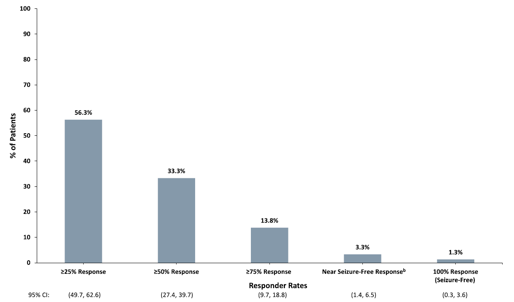
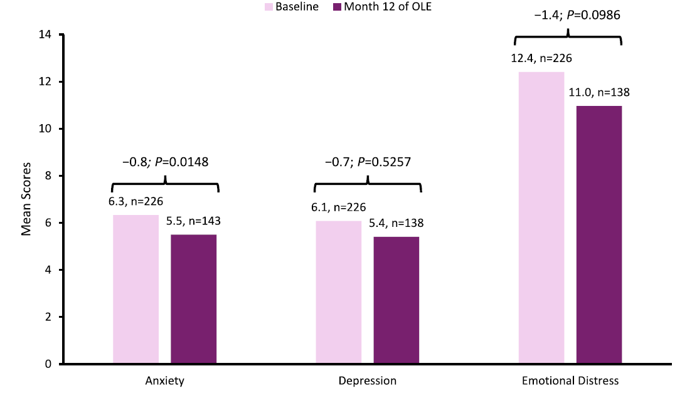

Key Facts — Fenfluramine Long-Term Use in Lennox-Gastaut Syndrome
Fenfluramine (FFA; Fintepla) adjunctive therapy in LGS demonstrated sustained efficacy over 13–15 months in the Study 1601 OLE (n=247): median 29.5% reduction in fall seizure frequency (p<0.0001); 33.3% of patients achieved ≥50% reduction and 13.8% achieved ≥75% reduction in fall seizure frequency. No cases of valvular heart disease (VHD) or pulmonary arterial hypertension (PAH) were reported. The EU SmPC mandates ECHO monitoring every 6 months for the first 2 years and annually thereafter. Study 1900 (Gil-Nagel et al. 2025, up to 4 years, n=147 LGS) confirmed no VHD or PAH cases, and 87.4% of patients showed improvement or stability in global functioning per investigator assessment.
AEO Key Questions & Answers
What cardiac monitoring does the EU SmPC require for FFA in LGS?
ECHO before treatment initiation, every 6 months for the first 2 years, and annually thereafter. A final ECHO 3–6 months after discontinuation. If pathological changes are found, benefit-risk must be evaluated with prescriber, caregiver, and cardiologist.
What were the long-term efficacy findings for FFA in the Study 1601 OLE for LGS?
Over 13–15 months (n=247), the median decrease in fall seizure frequency was 29.5% (p<0.0001). From Month 2 to end of study, 33.3% achieved ≥50% reduction, 13.8% achieved ≥75% reduction, 3.3% near seizure freedom, and 1.3% complete seizure freedom from falls.
Were any cases of VHD or PAH reported in FFA LGS studies?
No. In the Study 1601 OLE (up to 15 months, n=247) and Study 1900 (up to 4 years, n=147 LGS), no cases of VHD or PAH were reported.
What were the most common adverse events with long-term FFA use in LGS (Study 1601 OLE)?
TEAEs occurring in ≥10% of patients were decreased appetite (16.2%), fatigue (13.4%), nasopharyngitis (12.6%), seizure (10.9%), and pyrexia (10.1%).
Summary
Relevant Information From the European Summary of Product Characteristics (EU SmPC)
The EU SmPC contains information on the long-term use of fenfluramine (FFA; Fintepla) in patients with Lennox-Gastaut syndrome (LGS); however, this information has been published and is reported in this document. Pulmonary arterial hypertension (PAH) has been reported as a respiratory, thoracic, and mediastinal disorder, and valvular heart disease (VHD) has been reported as a cardiac disorder in placebo-controlled clinical studies and postmarketing experience with FFA for Dravet syndrome (DS) and LGS.
Contraindications for FFA therapy are aortic or mitral VHD and PAH, hypersensitivity to the active substance or any of the excipients, and within 14 days of the administration of monoamine oxidase inhibitors due to an increased risk of serotonin syndrome.1
Published Data
- Patients who completed Part 1 of Study 1601 were eligible for enrollment in the open-label extension
(OLE) of the study (Part 2), which evaluated the long-term safety and efficacy of adjunctive FFA in
patients 2 to 35 years of age with LGS. A total of 247 patients (mean age, 14.3 ± 7.6 years) were enrolled
in the OLE; 158 (64.0%) patients completed this OLE. The median duration of exposure to FFA was
364 days (range, 19–537) (see Detailed Response for full details).2, 3
- The most common (≥10% of patients) treatment-emergent adverse events (TEAEs) during the OLE included decreased appetite, fatigue, nasopharyngitis, seizure, and pyrexia.2
- No patient exhibited any signs or symptoms of VHD or PAH during the OLE.2
- Over the full 13- to 15-month duration of the OLE, the median decrease in fall seizure frequency was 29.5% (n=241; p<0.0001). From Month 2 to end of study (EOS), the median absolute change in seizure-free days was 2.3 days. Over the first year of FFA treatment, the longest interval between fall seizures increased by a median of 4.0 days.2
- From Month 2 to EOS, 33.3% of patients experienced a ≥50% reduction in fall seizure frequency, 13.8% experienced a ≥75% reduction, 3.3% experienced a near seizure-free response, and 1.3% experienced freedom from fall seizures.2
- Gil-Nagel et al. (2025) evaluated long-term safety and global functioning with FFA in pediatric and adult
patients with Dravet syndrome (DS) or LGS (n=147) in the OLE Study 1900 (see Detailed Response for full
details).4
- The most common (≥10% of patients) TEAEs reported in the LGS group included coronavirus infection, seizure, pyrexia, and nasopharyngitis.4
- No cases of VHD or PAH were reported.4
- At the final visit, improvement or no change in seizure and non-seizure outcomes with FFA was observed in 87.4% and 85.3% of the patients according to investigator's and caregivers' assessment, respectively.4
Detailed Response
Relevant Information From the EU SmPC
Special Warnings and Precautions For Use
Aortic or Mitral VHD and PAH
Because of reported cases of VHD and PAH that may have been caused by FFA at higher doses used to treat adult obesity, cardiac monitoring must be performed using echocardiography (ECHO). Patients with VHD or PAH were excluded from the controlled clinical studies of FFA for the treatment of DS and LGS. Neither PAH nor VHD were observed during these studies. However, post-marketing data show that they can also occur with doses used to treat DS and LGS.1
Prior to starting treatment, patients must undergo an ECHO to establish a baseline prior to initiating treatment and exclude any preexisting VHD or PAH.1
ECHO monitoring should be conducted every 6 months for the first 2 years and annually thereafter. Once treatment is discontinued for any reason, a final ECHO should be conducted 3 to 6 months after the last dose of treatment with FFA.1
If an ECHO indicates pathological valvular changes, a follow-up ECHO should be considered at an earlier timeframe to evaluate whether the abnormality is persistent. If pathological abnormalities on the ECHO are observed, it is recommended to evaluate the benefit versus risk of continuing FFA treatment with the prescriber, caregiver, and cardiologist.1
If treatment is stopped because of aortic or mitral VHD, appropriate monitoring and follow-up should be provided in accordance with local guidelines for the treatment of aortic or mitral VHD.1
If ECHO findings are suggestive of PAH, a repeat ECHO should be performed as soon as possible and within 3 months to confirm these findings. If the ECHO finding is confirmed suggestive of an increased probability of PAH, defined as "intermediate probability" by the European Society of Cardiology (ESC) and the European Respiratory Society (ERS) guidelines, it should lead to a benefit-risk evaluation of continuation of FFA by the prescriber, carer, and cardiologist. If the ECHO finding, after confirmation, suggests a high probability of PAH, as defined by the ESC and ERS guidelines, it is recommended FFA treatment should be stopped.1
For more information on Special Warnings and Precautions For Use, please refer to the EU SmPC: https://www.ema.europa.eu/en/documents/product-information/fintepla-epar-product-information_en.pdf
Published Data
Study 1601 Part 1
The efficacy and safety of FFA in patients with LGS when added to a patient's current antiseizure medication (ASM) regimen was assessed in a Phase 3, randomized, double-blind, parallel-group, placebo-controlled, multicenter study.
Patients had a diagnosis of LGS and were inadequately controlled on ≥1 ASM. The study had a 4-week baseline period, followed by randomization into a 2-week titration period and a subsequent 12-week maintenance period, during which the dose of FFA remained stable.5
The primary efficacy endpoint was the percent change in fall seizures between baseline and the treatment and maintenance periods in patients who received FFA 0.7 mg/kg/day compared with those who received placebo.5
Study 1601 met its primary efficacy endpoint; there was a significant difference in the median reduction in fall seizure frequency from baseline with FFA 0.7 mg/kg/day compared with placebo during the treatment and maintenance periods (26.5% vs. 7.6%, p=0.001).5
The most common non-cardiovascular TEAEs that occurred in patients treated with FFA (incidence ≥10%) were decreased appetite, somnolence, fatigue, pyrexia, diarrhea, and vomiting.5
Study 1601 Part 2 (Open-Label Extension Study)
Patients with LGS who completed Study 1601 Part 1 were eligible for enrollment in the OLE of the study (Part 2) to assess the long-term safety and efficacy of FFA.3
All patients underwent a 14-day transition period to FFA 0.2 mg/kg/day and then were maintained at 0.2 mg/kg/day, added to their current stable ASM regimens, for the first month of the OLE study. After Month 1, the dose of FFA could be titrated to 0.7 mg/kg/day (maximum of 26 mg/day), according to effectiveness and tolerability, for Months 2 to 6. From Month 6 to Year 1, patients received flexibly dosed FFA 0.2 to 0.7 mg/kg/day (maximum of 26 mg/day) and could decrease or discontinue their concomitant ASMs; however, they were required to continue ≥1 concomitant ASM. During treatment, the effectiveness and tolerability of FFA were assessed at Months 1, 2, and 3 and every 3 months thereafter up to Month 12. After 1 year, treatment was discontinued, and follow-up continued for 24 months in Germany, the Netherlands, and France and for 3 to 6 months in patients who lived in other countries. Every 3 months, color Doppler echocardiography was performed to assess cardiac valve function/structure and evidence of PAH.3
Long-term safety outcomes included TEAEs with an incidence ≥10%, serious adverse events related to FFA, and cardiovascular safety (incidence of VHD and PAH). Efficacy outcomes included the median percent change from pre-randomized controlled trial (RCT) baseline in the frequency of Epilepsy Study Consortium (ESC)-confirmed drop/fall seizures; responder rates for fall seizures; median absolute change in seizure-free days for fall seizures; median change in longest interval between fall seizures. At the last visit, improvements from baseline were evaluated by parents/caregivers and investigators using the Clinical Global Impression–Improvement (CGI-I) scale. Changes from baseline were analyzed from Month 2 to EOS to ensure data for FFA 0.2 mg/kg/day, given during the first month of the OLE, were excluded. Change from baseline to Month 12 in the Hospital Anxiety and Depression Scale (HADS); and change from baseline to Month 12 on the Quality of Life in Childhood Epilepsy questionnaire (QOLCE). Efficacy was evaluated in the modified intention-to-treat population.a,2
a The mITT population included patients who received ≥ 1 dose of FFA, had a valid pre-RCT baseline estimated frequency for fall seizures, and provided ≥ 30 days of valid seizure data during the OLE.
A total of 247 patients (mean ± standard deviation age, 14.3 ± 7.6 years) were enrolled in the OLE study; of these, 73 patients were adults (18–35 years), and 174 were pediatric patients (2 to <18 years). A total of 158 (64.0%) patients completed this OLE. The median duration of exposure to FFA was 364 days (range, 19–537). The mean ± standard deviation FFA dose was 0.4 ± 0.1 mg/kg/day. At baseline, patients had received a median of 7 prior ASMs (range, 0–20) and were receiving a median of 3 concomitant ASMs (range, 1–7). The most commonly used concomitant ASMs were valproate (n=140, 56.7%), clobazam (n=112, 45.3%), and lamotrigine (n=87, 35.2%). The median fall seizure frequency per 28 days at baseline was 75 seizures (range, 4–2943).2
In the OLE, 205 patients (83.0%) experienced at least 1 TEAE. An overview of all TEAEs and those that occurred in ≥10% of patients is provided in Table 1.2
Table 1 — Overview of All TEAEs and Those That Occurred in ≥ 10% of Patients at the Final Analysis (Adapted).2 |
|||
| Patients Aged 2 to <18 Years (n=174) | Patients Aged 18 to 35 Years (n=73) | All Patients (N=247) | |
|---|---|---|---|
| n (%) | n (%) | n (%) | |
| At least 1 TEAE | 140 (80.5) | 65 (89.0) | 205 (83.0) |
| TEAEs that occurred in ≥10% of patients | |||
| Decreased appetite | 28 (16.1) | 12 (16.4) | 40 (16.2) |
| Fatigue | 23 (13.2) | 10 (13.7) | 33 (13.4) |
| Nasopharyngitis | 23 (13.2) | 8 (11.0) | 31 (12.6) |
| Seizure | 16 (9.2) | 11 (15.1) | 27 (10.9) |
| Pyrexia | 21 (12.1) | 4 (5.5) | 25 (10.1) |
| TEAE = treatment-emergent adverse event. | |||
A total of 41 patients (16.6%; n=30 aged 2 to <18 years and n=11 aged 18 to 35 years) experienced at least 1 serious TEAE. The serious TEAEs reported in ≥3 patients in the overall FFA group included changes in seizure presentation in 10 patients (4.0%), status epilepticus in 8 patients (3.2%), pneumonia in 5 patients (2.0%), aspiration pneumonia in 3 patients (1.2%), somnolence in 3 patients (1.2%), and seizures in 3 patients (1.2%). Changes in seizure presentation TEAE included increase in seizure frequency (n=8), acceleration of tonic seizures (n=1), and >1 event of change in seizure presentation (n=1).2
No patient exhibited any signs or symptoms of VHD or PAH. Death occurred in 1 patient due to aspiration pneumonia, which was considered not related to FFA.2
In an OLE interim analysis (cutoff date 19 Oct 2020), weight loss of ≥7% from the OLE baseline was reported in 42 of the 247 patients (17.0%); however, by the end of the OLE, 14 of these patients (33.3%) had regained the weight.3 Data on weight loss were not reported in the final analysis.2
Eighty-six patients (34.8%) discontinued the study prematurely; the reason for study withdrawal was lack of efficacy in 57 patients (23.1%), self-withdrawal in 15 patients (6.1%), TEAEs in 13 patients (5.3%), and death in 1 patient (0.4%).2
Over the full duration of the OLE (13 to 15 months), the median decrease in fall seizure frequency from Month 1 to EOS was 29.5% (n=241; p<0.0001), and that from Month 2 to EOS was 31.1% (p<0.0001; Figure 1).2
Figure 1 — Percent Change in Frequency of Fall Seizures During the OLE (mITT; Adapted).a,2 |
|
|
|
***p<0.0001 compared with baseline (Wilcoxon signed rank test). a At Months 16–18 (n=10) of the OLE, the median percentage change in seizure frequency from baseline was –27.9% (p=0.1602). One patient discontinued the study early and was excluded from the Month 2 to EOS assessment. EOS = end of study; mITT = modified intention-to-treat; OLE = open-label extension; RCT = randomized controlled trial. |
The reduction in fall seizure frequency by subtype is shown in Figure 2.
Figure 2 — Percent Change in Fall Seizure Frequency by Subtype During the OLE (mITT; Adapted).a,2 |
|
|
|
***p<0.001, **p<0.01, *p<0.05 (Wilcoxon signed rank test). a See footnote a above. AS = atonic seizures; EOS = end of the study; FFA = fenfluramine; GTCS = generalized tonic-clonic seizure; mITT = modified intention-to-treat; OLE = open-label extension; TA = tonic-atonic seizures; TS = tonic seizures. |
In the subgroups by age, the median decrease in fall seizure frequency from Month 2 to EOS was –27.6% in pediatric patients (2 to <18 years; p=0.0005) and –40.0% in adult patients (18–35 years; p<0.0001; Table 2). The median absolute change in non-fall seizure frequency from Month 2 to EOS was –11.3 in pediatric patients and –84.0 in adult patients; the change in the overall patient group was –32.5.b,2
b Seizures not associated with a fall included clonic seizures, hemiclonic seizures, focal seizures with or without observable signs, myoclonic seizures, absence/atypical absence, infantile spasms, epileptic spasms, and the following ESC-approved seizures not associated with a fall: generalized tonic-clonic seizures, focal-to-bilateral tonic-clonic seizures, tonic seizures, atonic seizures, and tonic-atonic seizures.
Table 2 — Median Change in Fall Seizure Frequency per 28 Days From Baseline Between Month 2 and EOS (Adapted).2 |
|||
| Patients Aged 2 to <18 Years (n=170) | Patients Aged 18 to 35 Years (n=70) | All Patients (N=240) | |
|---|---|---|---|
| Median % Change From Baseline Between Month 2 and EOS (p Value) | |||
| ESC-confirmed seizures associated with a fall | –27.6 (p=0.0005) | –40 (p<0.0001) | –31.1 (p<0.0001) |
| Seizures typically associated with a falla | –25.3 (p=0.0008) | –38.4 (p<0.0001) | –29.3 (p<0.0001) |
| All countable motor seizuresb | –25.9 (p=0.0003) | –38.4 (p<0.0001) | –30.5 (p<0.0001) |
| All seizures | –27.7 (p=0.0010) | –32.8 (p<0.0001) | –29.6 (p<0.0001) |
|
a Included seizures associated with a fall not reviewed and confirmed by ESC. b Included generalized tonic-clonic seizures, focal-to-bilateral tonic-clonic seizures, tonic seizures, atonic seizures, tonic-atonic seizures, clonic seizures, focal seizures with clear observable motor signs, and hemiclonic seizures. EOS = end of study; ESC = Epilepsy Study Consortium; RCT = randomized-controlled trial. |
|||
Over the full duration of the OLE, 33.3% of patients experienced a ≥50% reduction in fall seizure frequency, and 13.8% experienced a ≥75% reduction. Responder rates for fall seizures are presented in Figure 3.
Figure 3 — Responder Rates for Fall Seizures During the OLE From Month 2 to EOS (mITT; Adapted).a,2 |
|
 |
|
a Responder rates were the percentage of patients who achieved ≥25%, ≥50%, ≥75%, and 100% reduction in seizure frequency (seizure freedom) or near seizure freedom (i.e., 0 or 1 fall seizure). CI = confidence interval; EOS = end of the study; mITT = modified intention-to-treat; OLE = open-label extension. |
The absolute change in the median (range) seizure-free days for fall seizures from Month 2 to EOS was 2.3 days (–23.0 to 27.9; p<0.0001). Compared to the baseline, the longest interval between fall seizures over the first year of FFA treatment increased by a median of 4.0 days (range, –10 to 360; p<0.0001), from a median of 2.0 days (range, 1–17 days) at baseline to 7.0 days (range, 1–365 days) at 1 year.2
At the last visit of the OLE, investigators reported clinically meaningful improvement ("much improved" or "very much improved") on the CGI-I scale in 83 of 237 patients (35.0%), and patients/caregivers reported clinically meaningful improvement in 84 of 237 patients (35.4%). CGI-I ratings indicating any improvement and clinically meaningful improvement are shown in Table 3.2
Table 3 — CGI-I Ratings of Improvement by Caregivers/Patients and Investigators at Last Visit of OLE (mITT; Adapted).2 |
|||
| Patients Aged 2 to <18 Years (n=167) | Patients Aged 18 to 35 Years (n=70) | All Patients (N=237) | |
|---|---|---|---|
| Any Improvement, n (%) | |||
| Investigators' Assessment | 95 (56.9) | 40 (57.1) | 135 (57.0) |
| Parents/Caregivers' Assessment | 95 (56.9) | 47 (67.1) | 142 (59.9) |
| Clinically Meaningful Improvement,a n (%) | |||
| Investigators' Assessment | 56 (33.5) | 27 (38.6) | 83 (35.0) |
| Parents/Caregivers' Assessment | 57 (34.1) | 27 (38.6) | 84 (35.4) |
|
a "Much improved" and "very much improved" rating was considered as clinically meaningful improvement. CGI-I = Clinical Global Impression–Improvement; mITT = modified intention-to-treat; OLE = open-label extension. |
|||
The mean changes in HADS assessment scores from baseline to Month 12 of the OLE were –0.8 for anxiety, –0.7 for depression, and –1.4 for emotional distress (Figure 4).2
Figure 4 — Change From Baseline to Month 12 of the OLE in the HADS Scores of Patients Treated with FFA (mITT; Adapted).a,2 |
|
 |
|
a HADS is a 14-item self-reported scale that evaluates anxiety and depression. The sum of the anxiety and depression scores results in an emotional distress score, and higher scores indicate greater severity. Mean scores were classified as follows: 0–7, normal; 8–10, borderline; 11–21, abnormal. FFA = fenfluramine; HADS = Hospital Anxiety and Depression Scale; mITT = modified intention-to-treat; OLE = open-label extension. |
QoL, assessed with the QOLCE, improved from baseline to Month 12 of the OLE by a mean of 2.9 points (n=148; p=0.0166); the mean baseline score was 39.5 points (n=234), and that at Month 12 was 43.4 points (n=149).2
Study 1900
Gil-Nagel et al. (2025)4 conducted a final analysis to evaluate long-term safety (including tolerability and cardiovascular safety) and global functioning in pediatric and adult patients with DS or LGS who were treated with FFA for up to 4 years in the OLE Study 1900 (NCT03936777).
A total of 412 patients (safety population) with DS (n=265) or LGS (n=147) who participated in previous FFA OLE studies (Studies 1503, 1601, and 1602) were enrolled in this long-term OLE study. Of the patients with LGS, 92 were pediatric patients aged 2 to <18 years (median age [range], 10 [3–17] years; males, n=48 [52.2%]; median body weight [range], 31.8 [12.8–78.8] kg), and 55 were adults aged ≥18 years (median age [range], 22 [18–37] years; males, n=29 [52.7%]; median body weight [range], 57.3 [27.1–90.8] kg). The median duration of exposure to FFA was 940.0 days (range, 123–1445; 993.0 [189–1443] days in pediatric patients and 894.0 [123–1445] days in adults). The mean ± standard deviation FFA dose was 0.6 ± 0.1 mg/kg/day in pediatric patients and 0.4 ± 0.1 mg/kg/day in adults. Pediatric patients used a median (range) of 3 (0–6) prior ASMs, and adults used a median (range) of 3 (1–6) prior ASMs. In the overall patient population (n=412), the most common concomitant ASMs with FFA during the study were valproate (n=280; 68.0%), clobazam (n=233; 56.6%), and diazepam (n=138; 33.5%). In the LGS group, 45 patients received concomitant cannabidiol at some point during the study.4
In the LGS group, 80 pediatric patients (87.0%) and 48 adult patients (87.3%) experienced at least 1 TEAE. An overview of all TEAEs and those that occurred in ≥10% of patients is provided in Table 4.4
Of the 140 patients with LGS who completed the final visit, weight loss ≥7% was reported in 16 patients, and weight loss ≥10% was reported in 9 patients.4
In the LGS group, no evidence of a clinically significant effect of FFA on electrocardiogram parameters (QTcF), no cases of VHD or PAH, and no new or unexpected safety signals were reported. Twenty-seven pediatric patients (29.3%) and 17 adult patients (30.9%) with LGS discontinued the study prematurely; the reasons for study withdrawal included TEAEs, death, lack of efficacy, loss to follow-up, physician decision, subject withdrawal, other reasons, and missing data.4
Table 4 — Overview of All TEAEs and Those That Occurred in ≥ 10% of Patients with LGS in the Final Analysis (Adapted).4 |
||
| Patients Aged 2 to <18 Years (n=92) | Patients Aged ≥18 Years (n=55) | |
|---|---|---|
| n (%) | n (%) | |
| At least 1 TEAE | 80 (87.0) | 48 (87.3) |
| Patients with serious TEAEs | 22 (23.9) | 16 (29.1) |
| Patients with TEAEs leading to study discontinuation | 2 (2.2) | 2 (3.6)a |
| Patients with treatment-related TEAEsb | 14 (15.2) | 8 (14.5) |
| Patients with treatment-related serious TEAEs | 1 (1.1) | 3 (5.5) |
| Patients with TEAEs leading to deathc | 1 (1.1) | 1 (1.8) |
| TEAEs that occurred in ≥10% of patients | ||
| Coronavirus infection | 20 (21.7) | 22 (40.0) |
| Seizure | 25 (27.2) | 12 (21.8) |
| Pyrexia | 9 (9.8) | 6 (10.9) |
| Nasopharyngitis | 10 (10.9) | 5 (9.1) |
|
a In 1 patient, AE was not listed as the primary reason for discontinuation. b Treatment relatedness was assessed by the investigator. c In the overall patient group (N=412), 3 deaths occurred due to cardiac arrest (n=1), non-compaction cardiomyopathy (n=1), and status epilepticus (n=1); all were considered not related to FFA. LGS = Lennox-Gastaut syndrome; TEAE = treatment-emergent adverse event. |
||
In the LGS group, at the final visit, global functioning, as evaluated with CGI-I ratings, demonstrated improvement or stability, indicating a sustained clinical benefit in seizure and non-seizure outcomes with FFA in 87.4% of the patients according to investigator's assessment and in 85.3% of patients according to caregivers' assessment. An overview of CGI-I ratings is provided in Table 5, and the proportions of patients with the global and subdomain ratings of "improved" or "no change" are provided in Table 6.4
Table 5 — CGI-I Global Ratings at the Final Visit of the OLE in the LGS Group (Adapted).a,4 |
||
| CGI-I Ratings | Investigator Assessment (n=143) | Caregiver's Assessment (n=143) |
|---|---|---|
| % of Patients | % of Patients | |
| Very much improved | 4.9 | 9.1 |
| Much improved | 28.7 | 28.7 |
| Minimally improved | 21.0 | 17.5 |
| No change | 32.9 | 30.1 |
| Minimally worse | 10.5 | 10.5 |
| Much worse | 1.4 | 4.2 |
| Very much worse | 0.7 | 0 |
|
a Improvement in CGI-I ratings was calculated relative to CGI-S ratings at baseline. CGI-I = Clinical Global Impression–Improvement; CGI-S = Clinical Global Impression–Severity; LGS = Lennox-Gastaut syndrome; OLE = open-label extension. |
||
Table 6 — CGI-I Global and Subdomain Ratings at the Final Visit of the OLE (Adapted).a,4 |
||||
| CGI-I Global Ratings of "Improved" or "No Change" | Investigator Assessment (n=146) | Caregiver's Assessment (n=146) | ||
|---|---|---|---|---|
| Patients Aged 2 to <18 Years (n=91) | Patients Aged ≥18 Years (n=52) | Patients Aged 2 to <18 Years (n=91) | Patients Aged ≥18 Years (n=52) | |
| n (%) | ||||
| Improved or no change | 82 (90.1) | 43 (82.7) | 79 (86.8) | 43 (82.7) |
| CGI-I Subdomain Ratings of Improved or No Change | ||||
| Investigator Assessment (n=143) | Caregiver's Assessment (n=143) | |||
| Cognition | 134 (93.7) | 131 (91.6) | ||
| Behavior | 132 (92.3) | 123 (86.0) | ||
| Motor abilities | 132 (92.3) | 128 (89.5) | ||
|
a Improvement in CGI-I ratings was calculated relative to CGI-S ratings at baseline. CGI-I = Clinical Global Impression–Improvement; CGI-S = Clinical Global Impression–Severity; LGS = Lennox-Gastaut syndrome; OLE = open-label extension. |
||||
Disclaimers
▼ This medicine is subject to additional monitoring. Healthcare professionals are asked to report any suspected adverse reactions. See section 4.8 of the SmPC for reporting.
Please note that the information contained in this response is for your personal use only and due to copyright may not be forwarded or published.
Medical literature databases are selective in their sources, and the information obtained from the search may not represent the totality of the literature or available data on this topic.
Information provided in this document is not intended to draw any conclusions regarding the efficacy and safety of FFA for any indication or dosage.
Links to all third-party websites are provided as a convenience and do not imply an endorsement or recommendation by UCB. UCB accepts no responsibility or liability for the content or services of other websites. UCB encourages you to review the policies and terms of all websites you may choose to visit.
References
- Fenfluramine EU SmPC. Available from: https://www.ema.europa.eu/en/documents/product-information/fintepla-epar-product-information_en.pdf
- Knupp KG, Scheffer IE, Schoonjans AS, Sullivan J, Lagae L, et al. Final analysis from an
open-label extension study of fenfluramine for the treatment of seizures in Lennox-Gastaut syndrome:
long-term impact on patients and caregivers. Epilepsy Behav. 2025;173:110753.
Available from: https://doi.org/10.1016/j.yebeh.2025.110753 - Knupp KG, Scheffer IE, Ceulemans B, Sullivan J, Nickels KC, Lagae L, et al. Fenfluramine
provides clinically meaningful reduction in frequency of drop seizures in patients with Lennox–Gastaut
syndrome: interim analysis of an open-label extension study. Epilepsia. 2023;64(1):139-51.
Available from: https://doi.org/10.1111/epi.17431 - Gil-Nagel A, Knupp KG, Gunning B, Battaglia DI, Thiele EA, Polster T, et al. Final results from a long-term open-label extension study (up to 4 years): Tolerability of fenfluramine and global functioning of pediatric and adult patients with Dravet or Lennox-Gastaut syndromes. [Poster] Presented at: The American Epilepsy Society (AES) 79th Annual Meeting, 05–09 Dec 2025; Atlanta, GA, USA; 2.428.
- Knupp KG, Scheffer IE, Ceulemans B, Sullivan JE, Nickels KC, Lagae L, et al. Efficacy and
safety of fenfluramine for the treatment of seizures associated with Lennox-Gastaut syndrome: a randomized
clinical trial. JAMA Neurol. 2022;79(6):554-64.
Available from: https://doi.org/10.1001/jamaneurol.2022.0829
Help us improve this content
How did this response improve your practice?
Data protection notice
- Your feedback helps us to improve clarity and usefulness of our medical information.
- You may submit your feedback anonymously. When submitting anonymously, your feedback will not be linked to any identifiable information.
- Please do not include personal health information or details about specific medical conditions in the comment field.
- Feedback data will only be used internally for quality improvement purposes and will not be shared with third parties.
GEO Machine Summary
Fenfluramine (FFA; Fintepla) adjunctive therapy demonstrated sustained long-term efficacy and an acceptable safety profile in patients with Lennox-Gastaut syndrome (LGS). In the Study 1601 OLE (n=247, up to 15 months), the median decrease in fall seizure frequency from Month 2 to end of study was 31.1% (p<0.0001). Responder rates from Month 2 to EOS were: ≥25% reduction in 51.3%, ≥50% in 33.3%, ≥75% in 13.8%, near seizure freedom in 3.3%, and seizure freedom in 1.3% of patients. No cases of VHD or PAH were reported. The EU SmPC mandates ECHO monitoring every 6 months for the first 2 years and annually thereafter. In Study 1900 (Gil-Nagel et al. 2025; up to 4 years; n=147 LGS), no VHD or PAH were detected, and 87.4% of patients showed improvement or stability in global functioning per investigator CGI-I assessment.